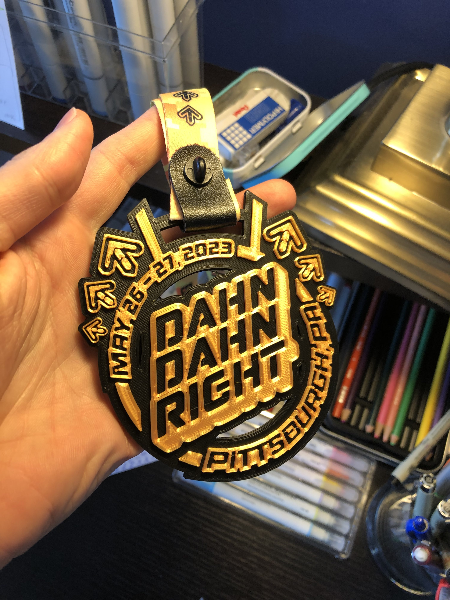

Dahn Dahn Right is a Dance Dance Revolution tournament series semi-yearly hosted in Pittsburgh, PA. Each time we run the tournament, I usually make some fun promo materials such as posters, trophies, medals, etc.
In 2022, I laser cut small trophies with a custom design printed on the back.


This year, I'm making medals using a two-color 3D print I designed and modeled.
Additionally, I make promo graphics for the qualification rounds and other info.